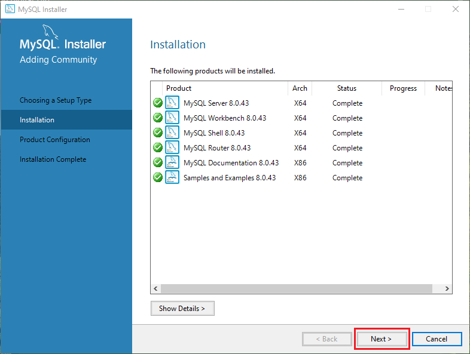
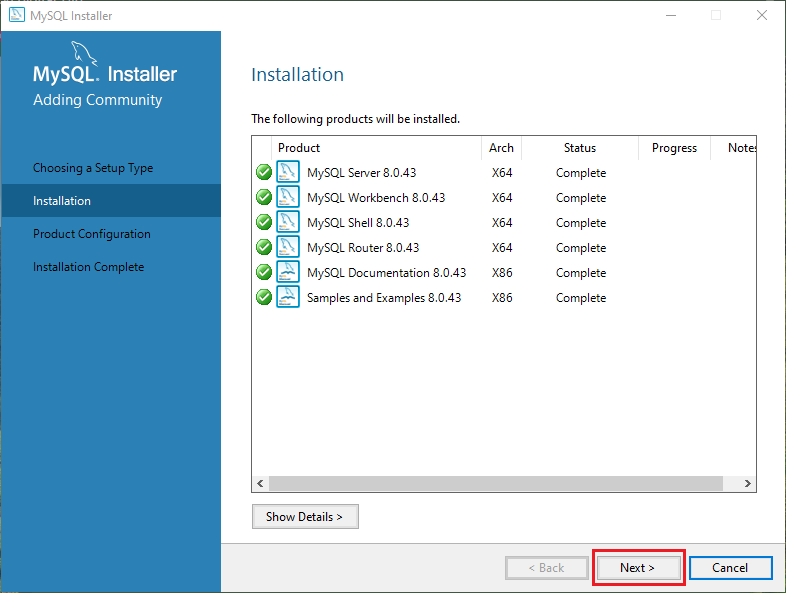

HTML
Essa parte não está pronta, dê uma olhada nas outras seções.

Essa parte não está pronta, dê uma olhada nas outras seções.
Essa parte não está pronta, dê uma olhada nas outras seções.
Essa parte não está pronta, dê uma olhada nas outras seções.
Essa parte não está pronta, dê uma olhada nas outras seções.
Olá, seja bem vindo à seção GIT - GITHUB. Neste espaço você encontrará informações e dicas sobre como utilizar o Git e o GitHub para versionamento de código, colaboração em projetos e controle de versões.

Antes de você começar a conhecer os "códigos" do Git, você precisa saber a parte da criação de uma conta no GitHub e como deve ser feita a instalação.
brew install git ou baixe em git-scm.com.
sudo apt-get install git (Debian/Ubuntu).
Após instalar, abra o terminal e digite git --version para verificar se a instalação foi bem-sucedida.
Para o git validar seus commits, é necessário que você faça uma espécie de login no Git Bash, um login nele mesmo. Por agora você colocará apenas o seu nome de usuário e email, utilizando o seguintes comandos:
git config --global user.name 'seu nome' (Sem aspas simples)git config --global user.email 'seu email' (Sem aspas simples)Se quiser ver o "resultado" deste cadastro, basta inserir o comando:
git config --list
Olá, seja bem vindo à seção MySQL. Neste espaço você encontrará informações e dicas sobre como utilizar o MySQL e suas extensões para criação de banco de dados, linkagem com PHP e muito mais.

Antes de começar a criar tabelas, entidades e atributos, é necessário realizar o processo de instalação. Logo abaixo, estará listado o passo a passo da instalação do MySQL no Windows:
Para verificar se o MySQL foi instalado corretamente, abra o prompt de comando e digite:
mysql --version
Segue abaixo o passo a passo da configuração do MySQL baseado no vídeo Instalando o MySQL e o SQLiteStudio - Curso de SQL - Aula 01 (Canal: CFB Cursos). Para mais detalhes ou tirar alguma dúvida recomendo que confira o vídeo da fonte.
 
